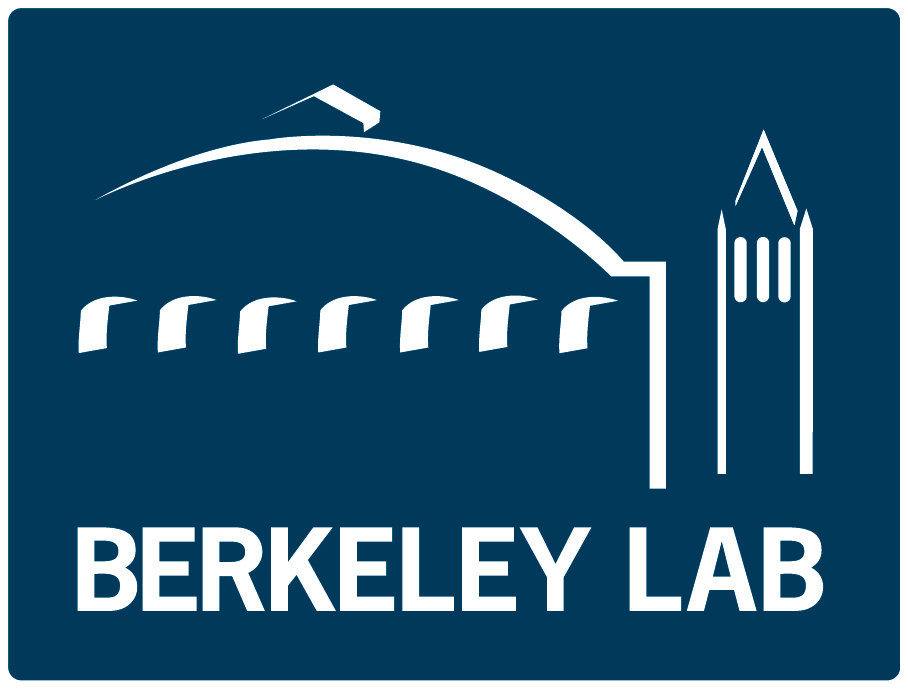
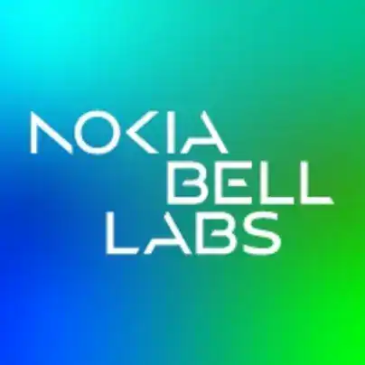
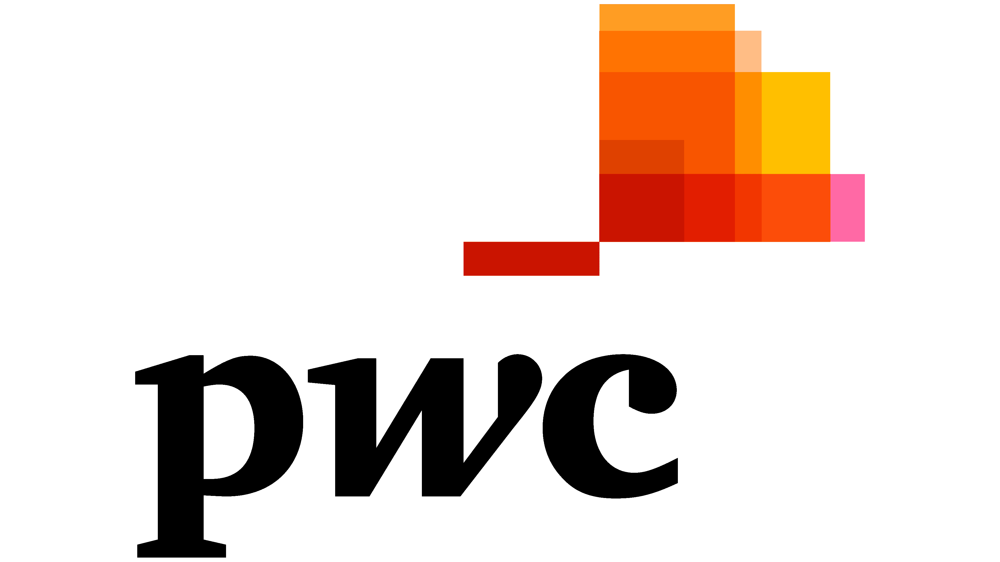
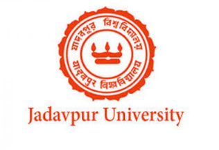

Career Overview
Work Experience
Senior Software Engineer (L5), Google Cloud
Nov 2026 — Present
- Leading Bare Metal Architecture: I lead architectural changes across the GCE Bare Metal (BM) instance lifecycle (provisioning, maintenance, and repair). I author the design docs, align partner teams across the compute, hardware, and fleet-management stacks, and drive the changes from design to production.
- E2E Testing: I lead end-to-end (E2E) testing for BM platforms and new product introductions (NPIs) by developing and improving test framework suites and by scoping and debugging tests.
- Maintenance Redesign: I co-lead a project to cut maintenance downtime for Bare Metal customers. As part of this effort, I hosted a Ph.D. intern in summer 2026 and delivered an intern project on maintenance observability. Read more on my blog.
- Observability: I redesigned the Bare Metal operations dashboards that track fleet health and capacity across 10+ Bare Metal shapes, which the team uses for daily operational and on-call decisions.
Software Engineer III (L4), Google Cloud
Sep 2024 — Oct 2026
- Bare Metal Cloud Infrastructure: I engineer Google Cloud Platform (GCP) solutions to develop, maintain, and operationalize Bare Metal cloud solutions for demanding applications. The Google Compute Engine (GCE) Node Bare Metal servers allow users to run specialized high-performance computing (HPC) workloads, e.g., third-party virtualization software, applications with low-level access to the server, applications with ultra-low-latency (ULL) networking requirements, computationally demanding AI workloads, etc. Our team manages the development and availability of regionally distributed clusters of servers connected by a high-performance, low-latency network fabric.
- I was involved in testing through the CI/CD pipeline and overall DevOps for building several Bare Metal shapes, including the early development of the first Arm-based and GPU-based Bare Metal shapes.
- Bare Metal Launches:
- I worked on the first Arm-based bare metal shape Google Cloud developed in 2025–2026. Here is the Google Cloud Blog post announcing the product, C4A Metal.
- I worked on the first GPU-based bare metal shape Google Cloud developed, A4X Max Metal, which became generally available (GA) around the end of Q1 2026.
- AI Tooling: I formed a sub-team of 4 engineers and led the design and development of an end-to-end integrated agentic AI tool to resolve issues for a tier-2 oncall (with an SLO of 30 minutes) for the GCE Bare Metal team. The tool uses a Retrieval-Augmented Generation (RAG) agent and a vector database, integrates with Google's internal Large Language Model (LLM), and provides a frontend to the user. The tool increased the Bare Metal team's productivity enough that several other teams in the org adopted it and integrated their own knowledge corpora.
- Observability: I develop, maintain, and own a number of internal dashboards to track the health and capacity of the Bare Metal fleet. These dashboards improve the team's day-to-day decision-making.
- Hackathon: I led a sub-team of 4 engineers on an entry for the AI2 Hackathon, built on an early version of the on-call AI tool.
- Technical Talks: I co-presented at an org-wide all-hands. I also gave one of the first talks on starting the development life cycle of a new Bare Metal shape.
- Mentorship: I mentored 4 Ph.D. interns (SWE, Research, and Hardware) in 2025–2026.
- Interviews: I completed 65+ interviews of Software Engineering Full-time, SWE Intern, and Ph.D. Research Intern candidates (L3–L5).
- Volunteer: I took 18+ Google Champion calls (mock interviews on problem solving in Python, C++, and Rust).
Software Engineering Ph.D. Intern, YouTube
May 2023 — Aug 2023
- UVQ for YouTube Shorts: I collaborated closely with the playback experience, media algorithms, transcoding, and edge streaming teams and extended UVQ to YouTube Shorts. As part of this work, I evaluated multiple ML models through A/B testing to comprehend subjective perception of video quality and learn from contextual factors (such as content type, device type, geolocation, and other streaming objectives). Here is a Google Research Blog that introduces the UVQ model.
- Intern Learning: Personal Branding, Fundamentals of Innovation, Impactful Performance Writing.
- Volunteer: I helped job seekers by reviewing their resumes.
Machine Learning Intern, Strategic Partnership for Industrial Resurgence (SPIR)
Jan 2024 — Aug 2024
- Explainable Graph Learning: I collaborated with researchers from Brookhaven and Los Alamos national labs and designed an explainable graph neural network (GNN) to detect heavy flavor decays in real time for the sPHENIX project, a high-energy nuclear physics experiment at Brookhaven National Laboratory.
- High-speed data transfer: I worked with engineers at Sunrise Technology Inc., incubated at the Center of Excellence in Wireless and Information Technology (CEWIT), on the development of a low-power embedded system (NVIDIA Jetson devices serving as DPUs) enabling high-speed data transfer (100 Gbps) across distributed file system nodes (CephFS) over the internet using the RDMA protocol RoCEv2, optimizing performance for high-performance computing applications (funded by and in collaboration with the Department of Energy). Feel free to check out this demo.
Research Project Assistant
Jun 2019 — Dec 2022
- Cache-efficient algorithms: I designed an empirical framework to evaluate when programs are cache- and memory-adaptive for external memory applications. These programs maintain good performance despite memory fluctuations, which are typically found in multicore, multithreaded, shared-memory, and cloud systems. I provided an algorithm design principle and reference implementation for cache-adaptive algorithms to solve large external-memory problem instances for fundamental problems such as cubic-time matrix multiplication, sorting, and dynamic programming algorithm for the longest common subsequence (LCS).
- Check out our paper at the 30th Annual European Symposium on Algorithms (ESA 2022)
- I extended this work and built a framework to evaluate the performance of external-memory algorithms with multi-threading in a multi-program HPC environment. The framework offers a general recipe for algorithm design in multi-threaded ecosystems. Check out the code.
- Machine-learning augmentation: I redesigned traditional online algorithms for rent-or-buy problems, augmenting them with single and multiple ML oracles accounting for arbitrarily fluctuating discounts on the rent of the resource. In subsequent work, I revisited conventional online decision-making problems, such as the list access, job scheduling, secretary selection, and green and parallel paging problems.
- Check out our paper at the 16th International Conference and Workshops on Algorithms and Computation (WALCOM 2022) and our article in Elsevier Theoretical Computer Science.
- Check out our poster at SIGMETRICS 2023.
- Filesystem aging: I collaborated with a large group of researchers, engineers, and professors to evaluate the degradation of read performance across five production filesystems (ext4, btrfs, xfs, zfs, and f2fs) owing to poor data layout and disk fullness. This evaluation, conducted using microbenchmarks and application-level fragmentation benchmarks, demonstrated that the degradation could be mitigated with a $B^{\varepsilon}$-tree-based write-optimized in-kernel filesystem like BetrFS.
- Check out our article on arXiv.
Mentor, Women in Science and Engineering (HS-WISE)
Sep 2019 — Apr 2023
- Lessons: Basics of Probability and Thinking Algorithmically.
- I mentored high-school students across Long Island, NY, and encouraged them to pursue a career in science and engineering.
- Shoreham-Wading River High School (2019-20).
- Comsewogue High School (2020-21).
- Hauppauge High School (2021-22).
- Bellport High School (2022-23).
- Check out the recommendation letter I received from the Program Director of WISE at Stony Brook, Jacquelyn Gatta.
Graduate Teaching Assistant
Stony Brook, NY, USASep 2018 — May 2019 & Jan 2023 — Apr 2023
- Graded papers and homework assignments, proctored exams, and held weekly office hours.
- Theory of Database Systems (CSE 532) in Spring 2023 under Prof. Fusheng Wang.
- System Fundamentals - II (CSE 320) in Spring 2019 under Prof. Eugene Stark.
- Fundamentals of Information Technology (ISE 218) in Fall 2018 under Prof. Kevin McDonnell.

Visiting Research Student Intern
Lawrence Berkeley National Laboratory | Berkeley, CA, USA
Hosts: Dr. Helen XuSep 2023 — Dec 2023
- Dynamic GAP: I expanded the experimental framework of the GAP@Berkeley project to incorporate dynamic graph algorithms and designed an experimental framework to study the performance of external-memory algorithms (APIs) for large sparse dynamic graphs. I studied batch-parallel algorithms for processing large sparse time-evolving graphs and conducted a comparative study with the top node-wise parallel static algorithm using this framework. Check out the GitHub repo for this work.

Cloud and Networking Intern
Nokia Bell Labs | Murray Hill, NJ, USA
Hosts: Dr. Edward Grinshpun and Chuck PayetteJun 2022 — Aug 2022
- Augmenting L4S with predictions: I researched out-of-band ML-based prediction-enhanced congestion control algorithms tailored for low-latency, high-volume, variable-bitrate applications, such as live video streaming, within 5G wireless network systems.
- Here is a talk I gave explaining my work at a high level.
- Intern Learning: I completed Harvard ManageMentor Leading People by Harvard Business Publishing and End-to-End 5G Networking by Nokia Bell Labs.
May 2018 — Aug 2018
- I reviewed the performance of Multi-Objective Evolutionary Algorithm based on Decomposition (MOEA/D) techniques experimentally using MATLAB.

Consultant, Technology Consulting
PricewaterhouseCoopers India | Kolkata, WB, India
Manager: Sudipto SarkarJul 2016 — Sep 2017
- I took part in on-site visits for requirements gathering and engaged with the client on system co-design. I co-led the technical development of an ERP solution. The system aimed to streamline business processes and generate reports for finance, procurement, and inventory management for an international client in the power generation and distribution sector.
- I built a payroll automation system using .NET technologies and the MVC architecture.
- Volunteer activities: I served as a speaker and evaluator at the Toastmasters International club at PwC India.

Undergraduate Research Assistant
Jadavpur University | Kolkata, WB, India
Advisor: Prof. Debangshu DeyJun 2015 — May 2016
- I researched image and video processing and designed algorithms for affective computing and programmed a methodology to detect emotion. We studied Bi-dimensional Empirical Mode Decomposition (BEMD) based feature extraction, Principal Component Analysis (PCA), Linear Discriminant Analysis (LDA) based dimensionality reduction, Gray-level Co-occurrence Matrix (GLCM), Histogram of Oriented Gradients (HOG), Local Ternary Pattern (LTP) based feature elimination, and Multi-class Support Vector Machine (MSVM), k-Nearest Neighbor (kNN) based classification. We did the empirical evaluation on 3 datasets (JAFFE, Cohn–Kanade, and eNTERFACE) using MATLAB.
- Check out our initial paper and the follow-up article in Springer Soft Computing.
- I designed algorithms for biomedical image processing and cancer detection using optical colonoscopy videos by cross-wavelet feature extraction.
Undergraduate Summer Intern
Jun 2014 — Aug 2014
- I designed a portable electronic device for non-invasive continuous measurement of blood pressure.
Hackathons
- Team Lead and Presenter, Bare Metal and Memory-optimized VM Oncall AI Agent at AI2 Hackathon, Google
- Speaker and Mentor, Hack@CEWIT'23, Workshop: Is this idea a "winner winner, chicken dinner"?
- Mentor, SBUHack'22
- Winner: Best Hack and Best Domain, Hack@CEWIT'22, Cryptopiens
- Winner: Best Security Hack, SBUHack'21, Steganography Attack
- Winner: SparkHACK'15, presented by Dept. of Elec Engg, Jadavpur University and NASSCOM
- Winner: Best Pitching, Glocal Camtech Jugaad-a-thon 2014, Tattle-tale Pillbox
- Third position, CIRCUISTIC 1.0, CONVOLUTION 2014, Dept. of Elec Engg, Jadavpur University